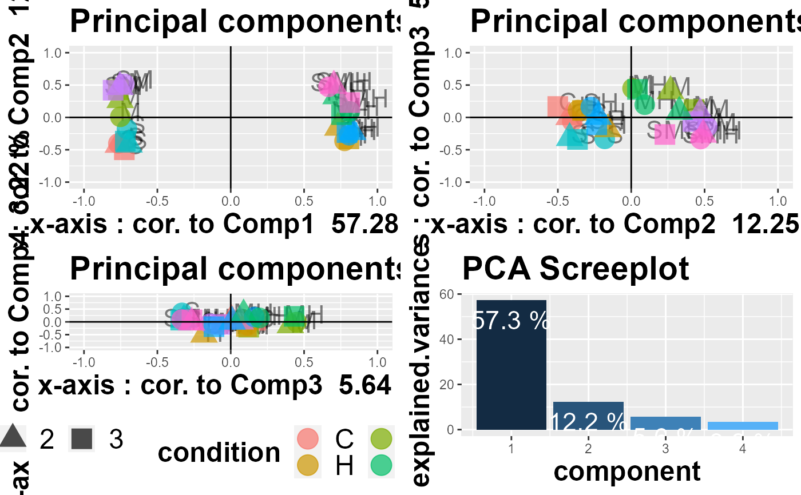

R/fct_viz.R
draw_PCA.RdDraws variables contributions to principal components, as well as the PCA screeplot. First to fourth principal components are shown, except if there are only 4 samples. In that case, 3 principal components are computed.
draw_PCA(data)
| data | normalized expression data with samples as columns and genes as rows. |
|---|
draw_MDS <- function(normalized.count) normalized.count <- normalized.count / rowMeans(normalized.count) mds <- limma::plotMDS(normalized.count, plot = FALSE) d <- data.frame( dim1 = mds$x, dim2 = mds$y, sample = names(mds$x), condition = stringr::str_split_fixed(names(mds$x), '_', 2)[, 1] ) g <- ggplot2::ggplot(data = d, ggplot2::aes( x = dim1, y = dim2, color = condition, label = sample )) + ggplot2::geom_point(size = 6) + ggplot2::geom_text( color = "black", size = 6, alpha = 0.5, nudge_x = 0.07, nudge_y = 0.07 ) g <- g + ggplot2::ggtitle("Multi Dimensional Scaling plot") g + ggplot2::theme( plot.title = ggplot2::element_text(size = 22, face = "bold"), strip.text.x = ggplot2::element_text(size = 20), legend.position = "bottom", legend.title = ggplot2::element_text(size = 20, face = "bold"), legend.text = ggplot2::element_text(size = 20, angle = 0), axis.text.y = ggplot2::element_text(size = 20, angle = 0), axis.text.x = ggplot2::element_text( size = 20, angle = 0, hjust = 0 ), legend.text.align = 1, axis.title = ggplot2::element_blank() ) Draw PCA results
